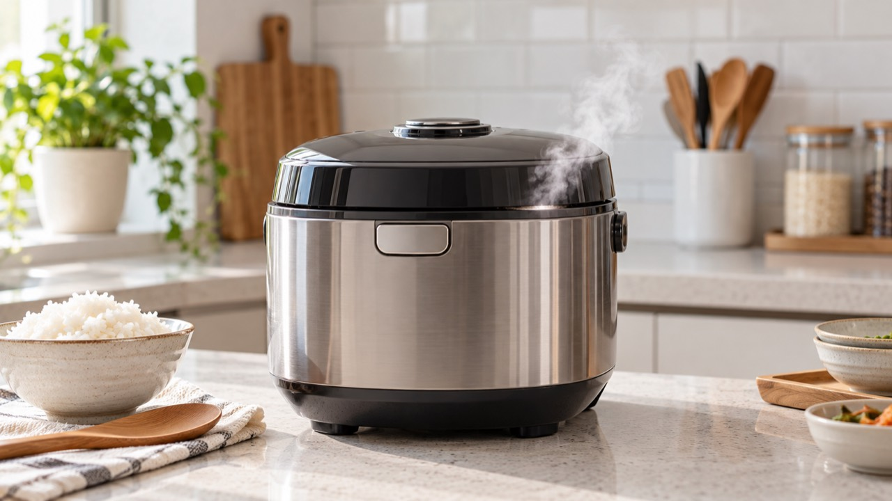

전기밥솥 뚜껑 옆으로 김이 새면 패킹이 비뚤어졌거나 이물질이 끼었는지, 내솥 가장자리가 깨끗한지 먼저 확인하세요. 압력 취사 중에는 절대 뚜껑을 강제로 열거나 증기 배출구에 얼굴과 손을 가까이 대면 안 됩니다.
취사 단계에 따라 증기 배출구로 김이 나오는 것은 정상일 수 있습니다. 그러나 뚜껑 한쪽 틈에서 계속 새거나 취사가 끝나도 압력이 비정상적으로 남는다면 사용을 중단해야 합니다.
패킹을 정확히 장착하고 이물질을 제거해도 같은 위치에서 증기가 계속 새거나, 뚜껑 잠금이 헐겁고 압력 표시가 이상하면 모델명과 누출 위치를 기록해 점검을 받으세요.
밥이 설익는 증상도 함께 있다면 전기밥솥 밥이 설익을 때 점검법을 참고하세요.
제품 제조사의 고객지원에서 모델별 패킹 장착법과 세척법을 확인하고, 압력제품의 안전 주의사항을 우선 따르세요.